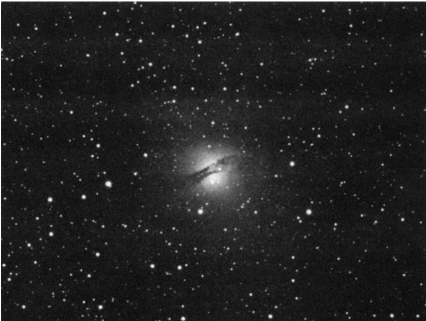

半人马座A · Centaurus A (NGC 5128)

NGC 5128 IN CENTAURUS IS THE MOST dynamic and intriguing galaxy in the heavens. It is virtually a superlative in every region of the electromagnetic spectrum. It is one of the brightest naked-eye galaxies; by far the nearest and most violent Seyfert-type galaxy known; one of the most intense radio sources in the heavens; and a wellspring of infrared, X-ray, and gamma-ray radiation. The very sight of its photograph tells us it is the epitome of mystery, a rebel against extragalactic conformity.
NGC 5128（半人马座A）是苍穹中最具活力且引人入胜的星系。它在电磁波谱的每个波段都堪称极致：既是肉眼可见最明亮的星系之一，更是迄今已知最近、最剧烈的赛弗特型星系；既是全天最强射电源之一，又是红外线、X射线和伽马射线的辐射源泉。仅凭其影像便足以昭示——这是神秘二字的化身，是挑战河外星系常规的叛逆者。
Its background glow resembles that of an elliptical (E0) galaxy, but its face is masked, Zorro-like, by a severely warped, highly opaque band of dust — one much wider and more chaotic than that found in any edge-on spiral. Compare this celestial Fabergé egg with any other galaxy in the Caldwell and Messier catalogs and you will see why NGC 5128 has been the nerve center of astronomical debate ever since James Dunlop discovered it almost two centuries ago.
其背景辉光虽似椭圆（E0型）星系，却被一条严重扭曲的高不透明尘埃带如佐罗面具般遮蔽。这条尘埃带比任何侧向螺旋星系的尘埃带都更为宽广混乱。将这枚宇宙法贝热彩蛋与其他星系相较，在考德维尔和梅西耶星表中，你会发现NGC 5128自詹姆斯·邓洛普近两个世纪前发现它以来，为何始终是天文学争论的焦点所在。
历史发现 · Historical Discovery
Dunlop first encountered this visual oddity while observing from Parramatta, New South Wales. His description of it is rather lengthy:
邓洛普首次在新南威尔士州帕拉马塔观测时发现了这一视觉奇观。他对该天体的描述相当详尽：
A very singular double nebula, about 2½' long, and 1' broad, a little unequal: there is a pretty bright small star in the south extremity of the southernmost of the two, resembling a bright nucleus: the northern and rather smaller nebula is faint in the middle, and has the appearance of a condensation of the nebulous matter near each extremity. These two nebulae are completely distinct from each other, and no connection
一个非常独特的双星云，长约2½角分，宽1角分，略有不均：在最南端的那颗星云南端有一颗相当明亮的小恒星，类似一个明亮的核；北侧稍小的星云中部较暗，两端附近似乎有星云物质的凝聚。这两个星云彼此完全独立，毫无关联。
James Dunlop included this object in his 1827 catalog, recognizing it as something extraordinary. The description of "two distinct nebulae" reflects what early observers saw through their primitive telescopes — a peculiar split appearance that would puzzle astronomers for generations to come.
詹姆斯·邓洛普于1827年将其收入星表，认识到这是一个非凡的天体。"两个独立星云"的描述反映了早期观测者透过原始望远镜所见的景象——一种令天文学家困惑数代的奇特分叉外观。
约翰·赫歇尔的观测 · John Herschel's Observation
J. HERSCHEL: A most wonderful object; a nebula very bright; very large; little elongated, very gradually much brighter in the middle; of an elliptic figure, cut away in the middle by a perfectly definite straight cut 40 arcseconds broad; position angle = 120.3°; dimensions of the nebula 5' × 4'. The internal edges have a gleaming light like the moonlight touching the outline in a transparency,
约翰·赫歇尔记录：一个最神奇的天体；星云非常明亮；非常大；略微拉长，中心逐渐变得非常明亮；呈椭圆形，中间被一道完全清晰笔直的裂隙切割，宽40弧秒；方位角=120.3°；星云尺寸5'×4'。内部边缘闪烁着微光，如同月光在透明画中勾勒出轮廓一般，
The General Catalogue describes it as: Remarkable, very bright, very large, very much extended toward position angle 122.5°, bifurcated.
《星云星团总表》描述道：显著、极亮、极大，沿方位角122.5°方向强烈延伸，分叉结构。
Herschel's poetic description of "moonlight touching the outline in a transparency" captures the ethereal quality of this cosmic enigma. The 40-arcsecond dark lane cutting through the galaxy's heart became its most distinctive feature, a defining characteristic that continues to captivate observers today.
赫歇尔关于"月光在透明画中勾勒出轮廓"的诗意描述，捕捉到了这个宇宙之谜的空灵特质。这条宽40弧秒的暗带横切星系核心，成为其最显著的特征，这一独特标志至今仍令观测者心驰神往。
物理特性 · Physical Characteristics
Its background glow resembles that of an elliptical (E0) galaxy, but its face is masked, Zorro-like, by a severely warped, highly opaque band of dust — one much wider and more chaotic than that found in any edge-on spiral.
其背景辉光虽似椭圆（E0型）星系，却被一条严重扭曲的高不透明尘埃带如佐罗面具般遮蔽。这条尘埃带比任何侧向螺旋星系的尘埃带都更为宽广混乱。
The dark dust lane that bisects Centaurus A is not merely a visual curiosity — it is evidence of a violent cosmic collision. Astronomers believe that NGC 5128 formed from the merger of a giant elliptical galaxy with a smaller spiral galaxy. The prominent dust lane represents the shredded remains of the spiral's disk, still settling into the gravitational embrace of its larger partner.
这条暗尘埃带不仅是视觉上的奇观，更是剧烈宇宙碰撞的证据。天文学家认为NGC 5128是由一个巨椭圆星系与一个较小的螺旋星系碰撞合并形成的。这条显著的尘埃带代表了螺旋星系盘被撕裂后的残余，仍在沉降进入其更大伙伴的引力掌控之中。
天体参数 · Object Parameters
| 参数 / Parameter | 数值 / Value |
|---|---|
| 类型 / Type | 特殊星系 / Peculiar Galaxy (SOp) |
| 星座 / Constellation | 半人马座 / Centaurus |
| 赤经 / Right Ascension | 13h 25.5m |
| 赤纬 / Declination | -43° 01′ |
| 视星等 / Magnitude | 6.7; 6.6 (O'Meara) |
| 视直径 / Angular Size | 16.7′ × 13.0′ |
| 表面亮度 / Surface Brightness | 13.7 |
| 距离 / Distance | 1600万光年 / 16 million light-years |
| 发现者 / Discoverer | 詹姆斯·邓洛普 / James Dunlop |
观测体验 · Observing Experience
Under a dark sky, Centaurus A is a stunning visual experience even through modest equipment. At magnitude 6.7, it hovers at the threshold of naked-eye visibility — a testament to its extraordinary proximity and luminosity. Through a small telescope, the galaxy reveals its most dramatic feature: a bright elliptical core split by a conspicuous dark dust lane running northwest to southeast.
在暗夜天空下，即使使用普通设备观测，半人马座A也能带来令人惊叹的视觉体验。其6.7等的视星等恰好处于肉眼可见的极限——这证明了它非同寻常的近距与明亮。通过小型望远镜观测，星系会展现出它最引人注目的特征：一颗被显著暗尘埃带分割的明亮椭圆核心，这条尘埃带从西北向东南延伸。
Through a 10-inch telescope at moderate magnification, the contrast between the ghostly elliptical halo and the stark black dust lane becomes almost confrontational. Herschel's "moonlight touching the outline in a transparency" evokes perfectly the strange luminescence that seems to emanate from within the galaxy's wounds.
通过10英寸口径望远镜配合适中倍率观测，幽灵般的椭圆光晕与漆黑的尘埃带之间的对比几乎令人屏息。赫歇尔
🔒 受限于篇幅，本文仅展示部分样章。O'Meara 先生完整的观测手记、实测数据及未公开的独家配图，请参阅原著双语典藏版。
👉 立即在闲鱼获取《DEEP-SKY COMPANIONS》中英双语高清典藏版